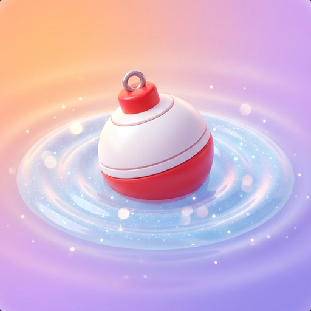
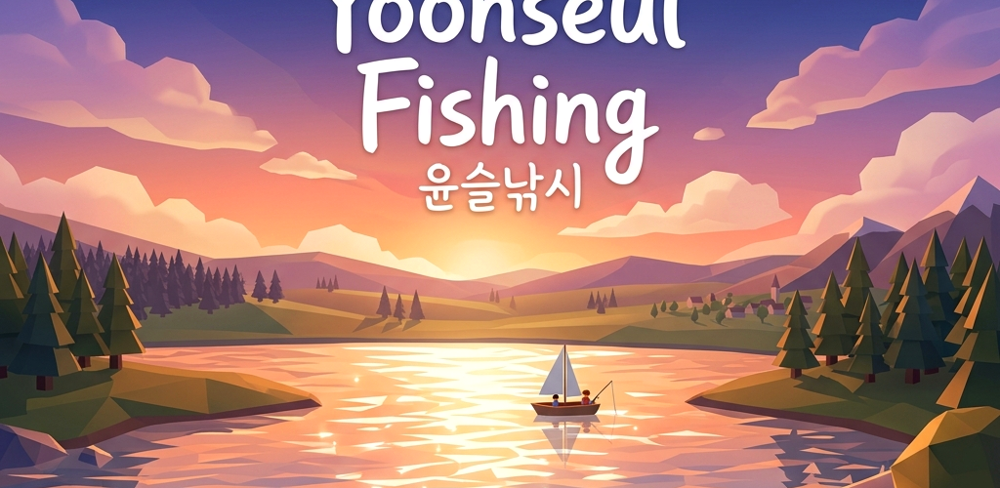
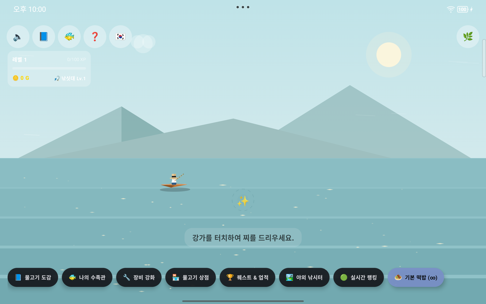
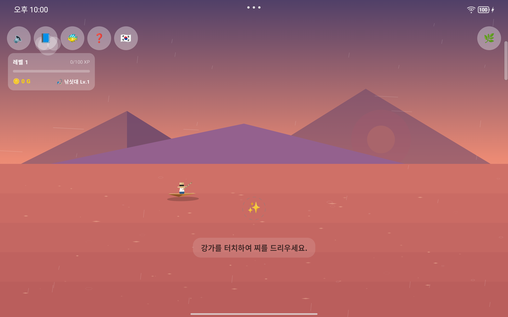
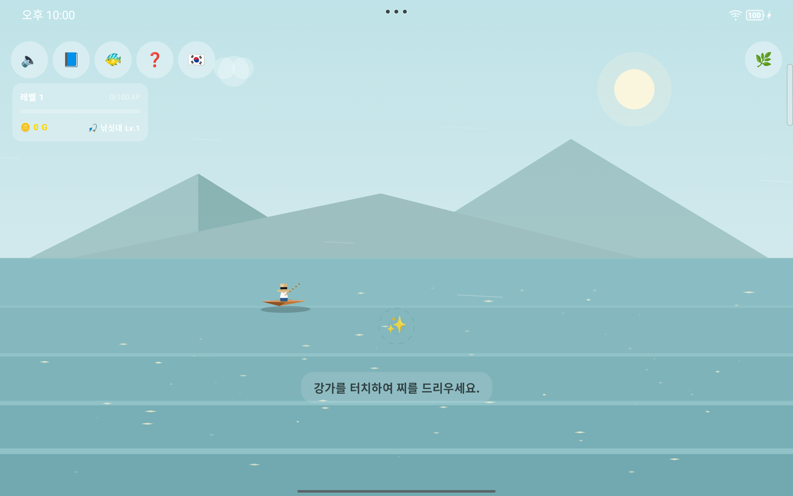

잔잔한 물결(윤슬)과 평화로운 음악 속에서 즐기는 힐링 낚시 게임
A healing fishing game set in calm water ripples and peaceful soundscapes

바쁜 일상 속에서 잠시 쉼표를 찍어보세요.
‘윤슬낚시’는 물 위에 반짝이는 빛무리를 뜻하는 순우리말 ‘윤슬’을 모티브로 삼은 2.5D 로우폴리 힐링 낚시 게임입니다. 복잡한 경쟁도, 결제 유도도 없습니다. 실시간으로 합성되는 펜타토닉 선율과 빗소리·바람 소리에 귀 기울이며, 잔잔한 수면에 찌를 던져 물고기를 기다릴 뿐입니다.
조용히, 천천히 즐기도록 만들어졌습니다
시간과 날씨의 변화에 따라 부드럽게 전환되는 색조와 2.5D 로우폴리 연출.
녹음 파일이 아닌, 코드가 실시간으로 연주하는 펜타토닉 선율과 비·바람·풀벌레 소리.
황금 붕어부터 전설의 달빛 메기, 신화 속 별빛 고래까지 도감을 채워보세요.
코인을 모아 미끼를 사고, 레벨을 올리고, 낚시터를 옮기며 천천히 성장합니다.
※ 아래는 원본 Android 버전 화면입니다. Unity 포트는 현재 개발 중입니다.

맑은 낮
노을
잔잔한 오후원본 Android 앱(Kotlin/Compose)을 Unity 6 / C#으로 다시 만들고 있습니다
게임 로직(상태머신·확률·합성 수식)은 1:1로 옮기고, 그릇(렌더링·UI·저장·오디오 출력)만 Unity 것으로 갈아끼우는 재작성입니다. 타깃은 Android 재출시와 PC(Windows)입니다. 현재 Phase 1 — 게임 로직 코어 이식 중입니다.